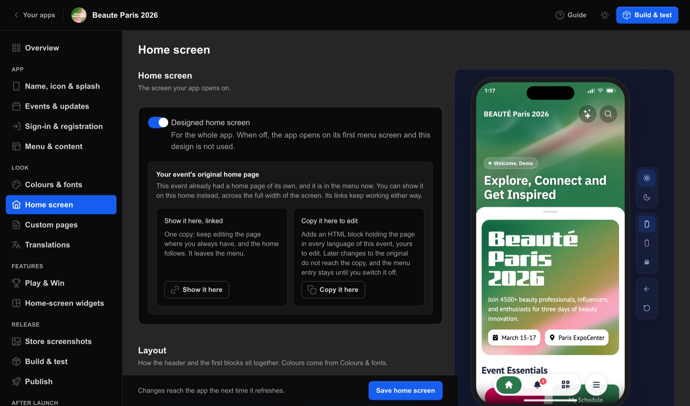

Home screen: field reference
Every field in Home screen: what it takes, its default, its limits and messages, whether it is set per event, per language or for the whole app, and what Save does. Numbers on the screen match the rows.


Fields
94 fields
| # | Field | Type and options | Default | Limits and messages | Kept | Saving and the app | |
|---|---|---|---|---|---|---|---|
| 1 | EventHome screen | select each event's title, or “Event [id]” for an event without one | The first event | per event | Not saved. It picks the event whose home the page edits, and the preview follows it. Layout edits of each event are kept while you switch; an unsaved badge-picture edit of the event you leave is dropped. | ||
| 2 | Designed home screenHome screen | toggle | The app's saved setting: off for a new app, unless the new app was copied from another app, which carries the switch over. | app | Kept in the draft, and the preview follows it at once; an “Unsaved” pill shows while it differs from the saved value. “Save home screen” saves it, only when it changed. | ||
| 3 | LayoutLayout | select Classic Floating card Tiles on the header Agenda first | The event's current layout; the built-in default home uses Classic. | One of the four. | per event | Kept in the draft; “Save home screen” saves the event's layout. | |
| 4 | Space between blocks (0-48)Layout | number | Empty: the layout's own spacing (“Default: the layout's own”). | 0 to 48 px; App Studio keeps the number within that range. Blank or not a number clears it. | per event | Kept in the draft; “Save home screen” saves it with the layout. | |
| 5 | Button in the top rightTop bar | select My badge AI assistant Nothing | My badge (when nothing is stored) | per event | Kept in the draft; “Save home screen” saves it with the layout. Choosing “AI assistant” also adds a switched-off AI Synapsium block when the home has none. | ||
| 6 | SearchTop bar | select Always visible Behind a magnifier | Always visible (when nothing is stored) | per event | Kept in the draft; “Save home screen” saves it with the layout. | ||
| 7 | Show the event nameTop bar | toggle | On | per event | Kept in the draft; “Save home screen” saves it with the layout. | ||
| 8 | Show the titleHeader | toggle | On | per event | Kept in the draft; “Save home screen” saves it with the layout. | ||
| 9 | Show a live countdownHeader | toggle | Off | per event | Kept in the draft; “Save home screen” saves it with the layout. | ||
| 10 | Line above the titleHeader | text | Empty: “Welcome, [name]” | One text per language (EN, DE, FR, ES, IT, RU buttons; a dot marks a filled language); up to 200 characters. | per event and language | Kept in the draft; “Save home screen” saves it with the layout. | |
| 11 | TitleHeader | text | Empty: “Your Digital Future Starts Here.” | Several lines, one text per language; up to 200 characters. | per event and language | Kept in the draft; “Save home screen” saves it with the layout. | |
| 12 | Text colourHeader | color | Empty: “Theme text colour” | #RRGGBB (checked when you save). A message says the colour must be a #RRGGBB code. | per event | Kept in the draft; “Save home screen” saves it with the layout. | |
| 13 | Title size (16-48)Header | number | Empty: “the style's own” | In pt. The number is saved as typed (rounded), and the app keeps the drawn size between 16 and 48. A number above 192 is refused when you save. | per event | Kept in the draft; “Save home screen” saves it with the layout. | |
| 14 | Extra height above the title (0-160)Header | number | 0 | 0 to 160 px; App Studio rounds the number and keeps it within that range. | per event | Kept in the draft; “Save home screen” saves it with the layout. | |
| 15 | Header shadeHeader | number | 100% | Slider 0-100% in steps of 5%. | per event | Kept in the draft; “Save home screen” saves it with the layout. | |
| 16 | Picture (4:3)Header picture | image | None | PNG or JPEG up to 10 MB, cropped 4:3; longest side capped at 2048 px; each side at least 200 px (checked when you upload).Choose a PNG or JPEG picture The picture is larger than 10 MB | per event | Stored at once when you upload it or paste a link; used after “Save home screen”. | |
| 17 | VideoHeader picture | video | None | MP4 only, up to 50 MB. A still picture is taken from its first frame.Choose an MP4 video The video is larger than 50 MB | per event | Uploaded at once when chosen (no crop dialog); used after “Save home screen”. | |
| 18 | Logo over the pictureHeader picture | image | None | Any shape (no fixed crop); a PNG stays PNG, so transparency is kept; PNG or JPEG up to 10 MB. | per event | Stored at once on upload; used after “Save home screen”. | |
| 19 | PositionHeader picture | select Left Centre Right | Left | per event | Kept in the draft until “Save home screen”. | ||
| 20 | SizeHeader picture | number | 56 px | Slider 16-160 px, steps of 2. | per event | Kept in the draft until “Save home screen”. | |
| 21 | Space aboveHeader picture | number | 16 px | Slider 0-120 px, steps of 2. | per event | Kept in the draft until “Save home screen”. | |
| 22 | Space underHeader picture | number | 14 px | Slider 0-64 px, steps of 2. | per event | Kept in the draft until “Save home screen”. | |
| 23 | Tint over the pictureHeader picture | toggle | On (unless switched off) | per event | Kept in the draft; “Save home screen” saves it with the layout. | ||
| 24 | One colour / GradientHeader picture | select One colour Gradient | One colour | per event | Kept in the draft until “Save home screen”. | ||
| 25 | ColourHeader picture | color | Empty: “Top bar colour” | #RRGGBB (checked when you save). | per event | Kept in the draft until “Save home screen”. | |
| 26 | StrengthHeader picture | number | 45% | Slider 0-100%, steps of 5%. | per event | Kept in the draft until “Save home screen”. | |
| 27 | Colours, from top to bottomHeader picture | list | No colours. With fewer than two, the top bar colour fades out from the top. | Up to 5 colours. Each: “Colour [n]” (default “Top bar colour”), “Strength” (default 100%), “Where it sits” (“Spread evenly”, or “[n]% down”). | per event | Kept in the draft until “Save home screen”. | |
| 28 | BlocksBlocks | list | The event's saved blocks; the built-in default home has: Sync progress banner, Pending changes banner, Log in prompt (guests), Stats at a glance (signed-in), Up next - my agenda (signed-in), Quick actions, Upcoming sessions, See all events (guests). | Drag up and down only; fixed rows never move. The list must keep at least one row (checked when you save).config is not a valid "[type]" widget config — [reasons] | per event | Draft; “Save home screen” replaces the event's whole layout. | |
| 29 | Show [name]Blocks | toggle | On for a new block | per event | Kept in the draft until “Save home screen”. | ||
| 30 | Who sees itBlocks | select Everyone Guests only Signed-in only | The block type's default: Signed-in only for Stats at a glance, Up next - my agenda and AI Synapsium; Everyone for the others. | per event | Kept in the draft until “Save home screen”. | ||
| 31 | Opens screenLinks, icons and styling inside a block | select None Home Then the event's menu screens and its custom pages, each by its name. | None | per event | Kept in the draft until “Save home screen”. | ||
| 32 | Web page link (optional)Links, icons and styling inside a block | text | Empty | Per language; a bare www address gets https://. With a screen chosen and an address already set, the field's label is “Link (optional) — opens this instead of the screen”.Enter a full address, such as https://example.com, or a mailto: or tel: link. | per event and language | Kept in the draft until “Save home screen”. | |
| 33 | A specific exhibitor (optional) / A specific session (optional) / A specific product (optional) / A specific person (optional) / A stand on the floor plan (optional)Links, icons and styling inside a block | other | Empty: the screen itself | Shown when the chosen screen lists items (exhibitors, sessions, products, people, the floor plan). Search by name or id, or type a stand number. | per event | Kept in the draft until “Save home screen”. | |
| 34 | Show an iconLinks, icons and styling inside a block | toggle | Filled in from the chosen screen | per event | Kept in the draft until “Save home screen”. | ||
| 35 | More stylingLinks, icons and styling inside a block | other | “Background colour” and “Text colour” default “Set by the style”; “Corner radius” Top left, Top right, Bottom left, Bottom right default “the style's own” (px). | per event | Kept in the draft until “Save home screen”. | ||
| 36 | ScreensQuick actions | list the event's menu screens | per event | Kept in the draft until “Save home screen”. | |||
| 37 | CountersStats at a glance | list Meetings Sessions Scanned badges Chats Unread messages Favourites Unread notifications | A new counter counts Meetings | Up to 3 (“Add a counter”; “[n] of 3”). Each “Counter [n]”: “Counts”, “Opens screen” (empty: “The counter's own screen”), “Label (optional)” per language. | per event and language | Kept in the draft until “Save home screen”. | |
| 38 | Space inside the block (0-48)Stats at a glance | number | 16 px | 0 to 48 px (checked when you save). | per event | Kept in the draft until “Save home screen”. | |
| 39 | Space between countersStats at a glance | number | 8 px | 0 to 48 px (checked when you save). | per event | Kept in the draft until “Save home screen”. | |
| 40 | Number of sessionsUp next - my agenda | number | 3 | per event | Kept in the draft until “Save home screen”. | ||
| 41 | Number of sessionsUpcoming sessions | number | 5 | per event | Kept in the draft until “Save home screen”. | ||
| 42 | TitleFeatured exhibitors | text | “Featured exhibitors” | Per language. | per event and language | Kept in the draft until “Save home screen”. | |
| 43 | Number of exhibitorsFeatured exhibitors | number | 8 | per event | Kept in the draft until “Save home screen”. | ||
| 44 | Number of announcementsAnnouncements | number | 4 | per event | Kept in the draft until “Save home screen”. | ||
| 45 | TitleSponsors strip | text | “Our sponsors” | Per language. | per event and language | Kept in the draft until “Save home screen”. | |
| 46 | CaptionLive countdown | text | “Event starts in” | Per language. | per event and language | Kept in the draft until “Save home screen”. | |
| 47 | Label linesButton row | select Default One line Two lines (taller row) | Default | per event | Kept in the draft until “Save home screen”. | ||
| 48 | Button styleButton row | select Default Plate - centred label Poster - capitals, an arrow and a round icon Soft - a sheen and a soft shadow Index - small spaced capitals and a thin arrow | Default | per event | Kept in the draft until “Save home screen”. | ||
| 49 | Label alignmentButton row | select Default Centred At the start | Default | per event | Kept in the draft until “Save home screen”. | ||
| 50 | Label size (10-28)Button row | number | “the style's own” | 10 to 28 px. | per event | Kept in the draft until “Save home screen”. | |
| 51 | ArrowButton row | select Default Show an arrow No arrow | Default | per event | Kept in the draft until “Save home screen”. | ||
| 52 | Row heightButton row | number | 52 px | per event | Kept in the draft until “Save home screen”. | ||
| 53 | Space between buttonsButton row | number | 12 px | per event | Kept in the draft until “Save home screen”. | ||
| 54 | ButtonsButton row | list Fill: Brand colour, Dark, Grey | One button, fill Brand colour | Up to 2 (“Add a button”). Each “Button [n]”: “Label” per language, the link fields, “Fill”, “Show an icon”, “More styling”. | per event and language | Kept in the draft until “Save home screen”. | |
| 55 | ColumnsTile grid | select Default 2 columns 3 columns | Default | per event | Kept in the draft until “Save home screen”. | ||
| 56 | Tile heightTile grid | number | 104 px | per event | Kept in the draft until “Save home screen”. | ||
| 57 | Space between tiles (0-24)Tile grid | number | 12 px | 0 to 24 px. | per event | Kept in the draft until “Save home screen”. | |
| 58 | TilesTile grid | list Fill: Brand colour, Dark, Grey, Accent colour; Size: One cell, Full width, Tall, with the next two beside it; Layout: Centred, Icon top left, words at the bottom | A new tile: Brand colour, One cell, Centred. | Up to 8 (“Add a tile”). Each “Tile [n]”: “Label”, “Line under the label (optional)”, the link fields, “Fill”, “Size”, “Layout”, “Show an icon”, “More styling”. | per event and language | Kept in the draft until “Save home screen”. | |
| 59 | ShapeImage row | select Default 3:1 — slim banner 2:1 — logo card (default) 16:9 — widescreen 3:2 — photo 4:3 — classic 1:1 — square | Default (2:1) | per event | Kept in the draft until “Save home screen”. | ||
| 60 | Space between picturesImage row | number | 12 px | per event | Kept in the draft until “Save home screen”. | ||
| 61 | PicturesImage row | list | One empty picture | Up to 2 (“Add a picture”). Each “Picture [n]”: “Picture” (cropped to the row's shape; a PNG stays PNG; up to 10 MB), the link fields, “Description” per language. | per event and language | Pictures stored at once on upload; the row with its pictures is saved with “Save home screen”. | |
| 62 | TitleSection heading | text | Example shown: “Section title” | Per language. | per event and language | Kept in the draft until “Save home screen”. | |
| 63 | Line under the titleSection heading | text | Per language. | per event and language | Kept in the draft until “Save home screen”. | ||
| 64 | AlignmentSection heading | select Default Left Centre | Default | per event | Kept in the draft until “Save home screen”. | ||
| 65 | Title colourSection heading | color | per event | Kept in the draft until “Save home screen”. | |||
| 66 | Title sizeSection heading | number | 20 px | per event | Kept in the draft until “Save home screen”. | ||
| 67 | HTMLCustom HTML | text | Example shown: “<div style="padding:16px">…</div>”. | Code, one per language. | per event and language | Kept in the draft until “Save home screen”. | |
| 68 | CSSCustom HTML | text | Example shown: “.card { padding: 16px; }”. | One stylesheet for every language (code editor). | per event | Kept in the draft until “Save home screen”. | |
| 69 | Starting heightCustom HTML | number | 0 px | per event | Kept in the draft until “Save home screen”. | ||
| 70 | Starting heightOriginal home page | number | 0 px | per event | Kept in the draft until “Save home screen”. | ||
| 71 | ShapeHero banner | select Default 3:1 — slim banner 2:1 — wide banner 16:9 — widescreen (default) 3:2 — photo 4:3 — classic 1:1 — square | Default (16:9) | per event | Kept in the draft until “Save home screen”. | ||
| 72 | PictureHero banner | image | None | Cropped to the chosen shape (16:9 when unset); PNG or JPEG up to 10 MB. | per event | Stored at once on upload; used after “Save home screen”. | |
| 73 | Video (MP4)Hero banner | video | None | MP4 up to 50 MB; a still picture is taken from its first frame. | per event | Uploaded at once when chosen; used after “Save home screen”. | |
| 74 | Line above the titleHero banner | text | Example shown: “Hall 3” | Per language; up to 200 characters. | per event and language | Kept in the draft until “Save home screen”. | |
| 75 | TitleHero banner | text | Example shown: “Innovation Theatre” | Per language; up to 200 characters. | per event and language | Kept in the draft until “Save home screen”. | |
| 76 | Text colourHero banner | color | #RRGGBB (checked when you save). A message says the colour must be a #RRGGBB code. | per event | Kept in the draft until “Save home screen”. | ||
| 77 | TintHero banner | other | The same tint editor as the header picture. | per event | Kept in the draft until “Save home screen”. | ||
| 78 | Button titleAI Synapsium | text | Example shown: “Ask the assistant” | Per language; up to 200 characters. | per event and language | Kept in the draft until “Save home screen”. The app shows the assistant button only once the event's preparation is Ready. | |
| 79 | Line under the titleAI Synapsium | text | Per language; up to 200 characters. | per event and language | Kept in the draft until “Save home screen”. | ||
| 80 | Button heightAI Synapsium | number | 64 px | 40 to 240 px (checked when you save). | per event | Kept in the draft until “Save home screen”. | |
| 81 | Button lookAI Synapsium | select Default Ink - solid, follows light and dark mode Paper - lighter, with a glowing edge | Default (Ink) | per event | Kept in the draft until “Save home screen”. | ||
| 82 | Opens onAI Synapsium | select Default Free chat Find exhibitors Route to a stand Plan my day | Default (Free chat) | per event | Kept in the draft until “Save home screen”. | ||
| 83 | GreetingAI Synapsium | text | Empty: the app's own welcome (example shown: “Welcome to MedTech 2026”). | Per language; up to 600 characters. | per event and language | Kept in the draft until “Save home screen”. | |
| 84 | Opening suggestionsAI Synapsium | list | None (example shown: “Who should I meet?”). | Up to 5 (“Add a suggestion”), each per language, up to 120 characters. | per event and language | Kept in the draft until “Save home screen”. | |
| 85 | Assistant nameAI Synapsium | text | Empty: the default name | Per language; up to 60 characters. | per event and language | Kept in the draft until “Save home screen”. | |
| 86 | AI noticeAI Synapsium | text | Empty: the default notice | Per language; up to 600 characters. | per event and language | Kept in the draft until “Save home screen”. | |
| 87 | What it can doAI Synapsium | list Speak to it Hear it answer Propose meetings Propose favourites Propose agenda adds Route to a stand | Each switch on Default (keeps what the app offers); “On” and “Off” are the other choices. | A switch can only turn something off for this event. | per event | Kept in the draft until “Save home screen”. | |
| 88 | BriefingAI Synapsium | text | Empty (example shown: “Steer people towards the Innovation Theatre in the afternoon; the north hall is closed on day three.”). | Plain text, one for all languages, up to 2000 characters (counter “[n] / 2000”).Shorten it to 2000 characters. | per event | Kept in the draft until “Save home screen”. Never sent to phones; App Studio keeps it. | |
| 89 | What it can read about the personAI Synapsium | list Their profile Their agenda Their meetings Their favourites Their scans | Each switch on Default | Switched off, the assistant cannot ask for that data at all. | per event | Kept in the draft until “Save home screen”. Never sent to phones; App Studio keeps it. | |
| 90 | What only you knowAI Synapsium | other | Empty | “Extra pages to read”: up to 20 full https:// addresses. “Facts”: up to 50, each a question (up to 300 characters) and an answer (up to 2000); a fact needs both to be saved. A red message refuses the save when an extra page is not a full https:// address. | per event | Kept in the draft until “Save home screen”. Never sent to phones; App Studio keeps it. | |
| 91 | How much one person can use itAI Synapsium | other Turns per day Turns for the whole event | Empty: “No extra limit” (the app's own limit stays). | Whole numbers from 1; can only lower the limit set for the app. A higher number is refused on save, and the refusal names the limit. | per event | Kept in the draft until “Save home screen”. Never sent to phones; App Studio keeps it. | |
| 92 | Badge headerBadge pictures | image | None of the event's own: the pictures set for all events apply. | PNG or JPEG up to 10 MB; cropped 3:1 and exported at 1200 x 400. | per event | Stored at once on upload; “Save home screen” saves it for the selected event. An unsaved edit is dropped when you switch events. | |
| 93 | Badge backgroundBadge pictures | image | As Badge header | PNG or JPEG up to 10 MB; cropped 9:19.5 and exported at 1170 x 2535. | per event | As Badge header. | |
| 94 | SponsorBadge pictures | image | As Badge header | PNG or JPEG up to 10 MB; cropped 16:5 and exported at 1200 x 375. | per event | As Badge header. |
Buttons and controls
| Button | What it does |
|---|---|
| Show it hereYour event's original home page | Card “Show it here, linked”: puts an “Original home page” block at the top of the blocks and opens it. The page stays where it is edited today, the home shows it, and it leaves the menu. Draft only. |
| Take it off the homeYour event's original home page | Shown once the linked block is on the home: removes it, and the page goes back to the menu. Draft only. |
| Copy it hereYour event's original home page | Card “Copy it here to edit”: adds a Custom HTML block at the top of the blocks, holding the page in every language of the event, yours to edit. The original no longer reaches the copy; its menu entry stays. The copy is in the draft until saved. |
| EN / DE / FR / ES / IT / RUHeader | Language buttons above a text: pick which language's text you are editing. |
| Use default ([default])Header | Under a field with your value: clears it, so the default applies. |
| Upload / Replace / Use default / No picture / Or paste a link to a pictureHeader picture | The picture field controls, as on Colours & fonts: choosing a file opens the crop dialog; its “Upload”, or a pasted https:// link, stores the picture for the app at once. |
| Upload MP4 / ReplaceHeader picture | Video field: uploads the chosen MP4 at once, then a still picture taken from its first frame. |
| Use the defaults (56 px, left, 16 px above, 14 px under)Header picture | Shown once a logo setting is changed: puts position, size and spacing back. Draft only. |
| Top bar colour fading outHeader picture | Replaces the gradient with two colours: the top bar colour, solid at the top, fading to clear at the bottom. Draft only. |
| Add a colourHeader picture | Adds a gradient colour; hidden at 5. Draft only. |
| Remove this colourHeader picture | Tooltip of a gradient colour's trash button: removes that colour. Draft only. |
| Use defaultHeader picture | Beside a slider that has a value: clears it so the default applies. |
| Move [name]Blocks | Drag handle: reorders the block. Draft only. |
| [block name] / Edit [name] / Close [name]Blocks | The block's name or its chevron opens or closes its settings. |
| Remove [name]Blocks | Trash button: takes the block off the home at once, without asking. Draft only, until saved. |
| Add a block: [block name]Blocks | Tray of the blocks this home does not have yet; blocks that may appear more than once (Button row, Tile grid, Image row, Section heading, Custom HTML, Hero banner) stay offered. Adds the block at the end, switched on, with its default audience, and opens it. “Original home page” is offered only when the event has one. Draft only. |
| Search by name, or type an idLinks, icons and styling inside a block | Item search for matching exhibitors, sessions, products or people. It searches the event as a guest, someone who is not signed in, so a person only signed-in people can see is not offered. |
| Use this stand / RemoveLinks, icons and styling inside a block | Sets a stand link from the typed number (placeholder “A12”), or removes the item link. Draft only. |
| Add a counterStats at a glance | Adds a counter (hidden at 3). Draft only. |
| Add a buttonButton row | Adds a button (hidden at 2). Draft only. |
| Add a tileTile grid | Adds a tile (hidden at 8). Draft only. |
| Add a pictureImage row | Adds a picture slot (hidden at 2). Draft only. |
| Open full-screen editorCustom HTML | Opens the HTML (per language) and the CSS side by side. Draft only. |
| Add a suggestion / Add a page / Add a factAI Synapsium | Adds a row to a capped list (hidden at the cap). Draft only. |
| Default / On / OffAI Synapsium | Each switch in “What it can do” and “What it can read about the person”. Draft only. |
| Prepare againPreparation | Shows “Try again” after a failure. Prepares the assistant for this event again, sending only what changed. It works only while the saved home offers the assistant: the AI Synapsium block switched on, or “AI assistant” as the “Button in the top right”. |
| Send everything againPreparation | Sends the whole event to the assistant again, not only what changed. Meanwhile “Preparation” shows “Sending everything again”, and the assistant keeps answering from what it has until this finishes. |
| Upload / Replace / Use default / Or paste a link to a pictureBadge pictures | As on the other picture fields: the crop dialog's “Upload”, or a pasted https:// link, stores the picture for the app at once. |
| Restore the default homeStart over | Opens the inline confirmation; nothing is sent. Disabled while a save is running. |
| Restore the defaultStart over | Saves at once: clears this event's own layout. The event then shows the app-wide home if one is set, else the built-in default. Badge pictures and the Designed home screen switch are not touched. |
| Keep my homeStart over | Closes the confirmation without changing anything. |
| Save home screenSave bar | Saves the layout of every event you edited since the last save (whole layouts), the selected event's badge pictures if they changed, and the Designed home screen switch if it changed, all at once. It does not save Colours & fonts, which has its own “Save changes”. Always enabled. After saving, App Studio prepares the AI assistant for each event whose saved home offers it (the AI Synapsium block switched on, or “AI assistant” as the “Button in the top right”) and that is new, changed or not yet ready; “Preparation” in the block shows its state. |
| Light theme / Dark theme / Preview device / Back / Restart app (replay splash)Phone preview | The buttons beside the phone preview, as on Colours & fonts: theme, phone frame (iPhone 16 Pro, iPhone (notch), Pixel 9 Pro), back inside the app, restart. Not saved: they only change the preview. |
| Home / My Badge / Boot flowPhone preview | The switch beside the small “Preview” label, below the form: where the preview starts, on the home, on My Badge, or walking through the splash, login and choose event. Not saved: it only changes the preview. |
| Signed-in preview / Guest previewPhone preview | Shows the home as a signed-in person or as a guest (only when the preview starts on Home). Not saved: it only changes the preview. |